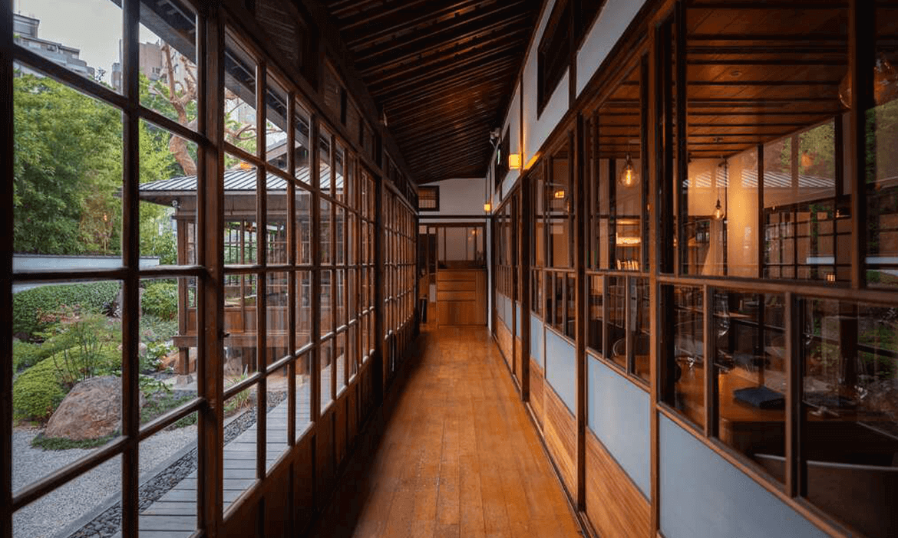

找美食、拍美食、吃美食、寫美食
趕快加入我們的行列吧
美食的天堂
2025年1月by 小丸子
老屋慢食樂埔町是一個充滿懷舊氛圍與溫馨情感的場所，坐落於一座精心修繕的老屋中。這裡結合了歷史建築的古樸與現代慢食文化的理念，以當地新鮮食材為主軸，提供健康且充滿創意的餐點。步入樂埔町，映入眼簾的是斑駁的磚牆、手工木桌與綠意盎然的小庭院，讓人彷彿穿越到一個悠閒的時代。無論是品味一道精緻的手作料理，還是與朋友細聊於微風輕拂的露臺，樂埔町總能讓人放慢腳步，享受片刻寧靜與美好生活的滋味。
老屋慢食樂埔町是一個充滿懷舊氛圍與溫馨情感的場所，坐落於一座精心修繕的老屋中。這裡結合了歷史建築的古樸與現代慢食文化的理念，以當地新鮮食材為主軸，提供健康且充滿創意的餐點。步入樂埔町，映入眼簾的是斑駁的磚牆、手工木桌與綠意盎然的小庭院，讓人彷彿穿越到一個悠閒的時代。無論是品味一道精緻的手作料理，還是與朋友細聊於微風輕拂的露臺，樂埔町總能讓人放慢腳步，享受片刻寧靜與美好生活的滋味。
老屋慢食樂埔町是一個充滿懷舊氛圍與溫馨情感的場所，坐落於一座精心修繕的老屋中。這裡結合了歷史建築的古樸與現代慢食文化的理念，以當地新鮮食材為主軸，提供健康且充滿創意的餐點。步入樂埔町，映入眼簾的是斑駁的磚牆、手工木桌與綠意盎然的小庭院，讓人彷彿穿越到一個悠閒的時代。無論是品味一道精緻的手作料理，還是與朋友細聊於微風輕拂的露臺，樂埔町總能讓人放慢腳步，享受片刻寧靜與美好生活的滋味。